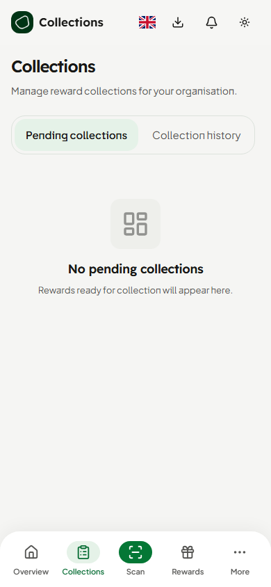
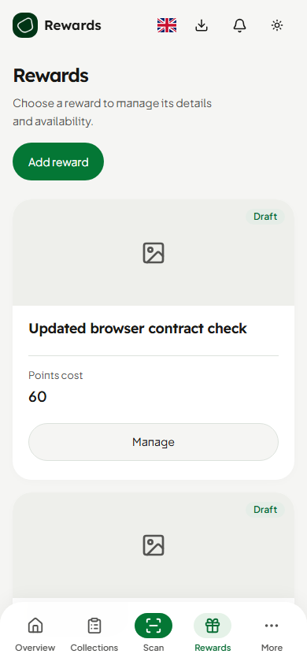
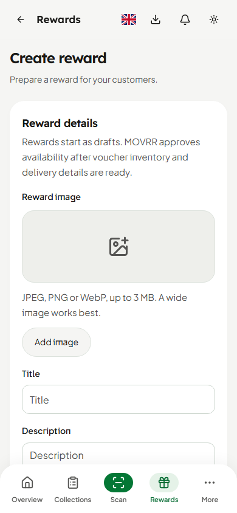
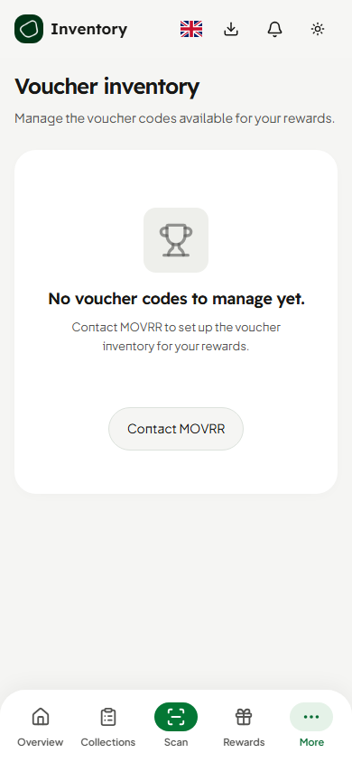
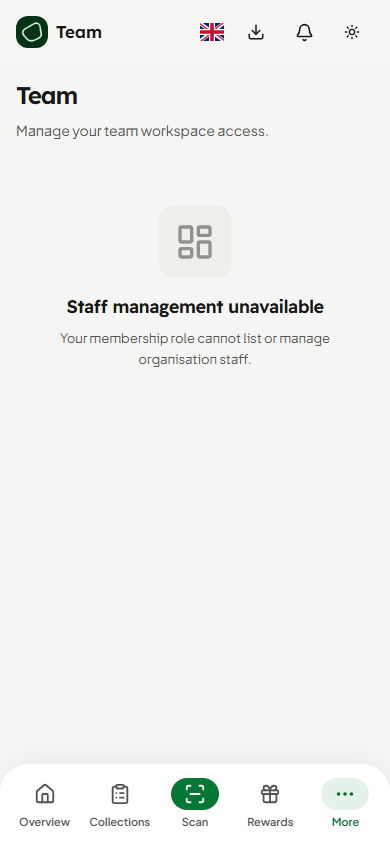
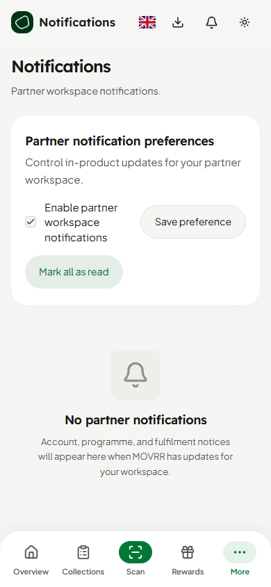
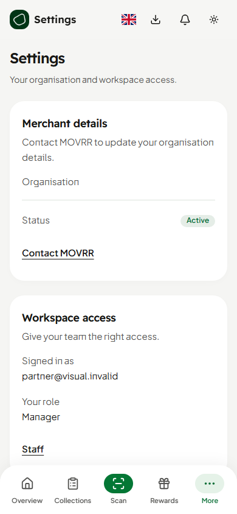
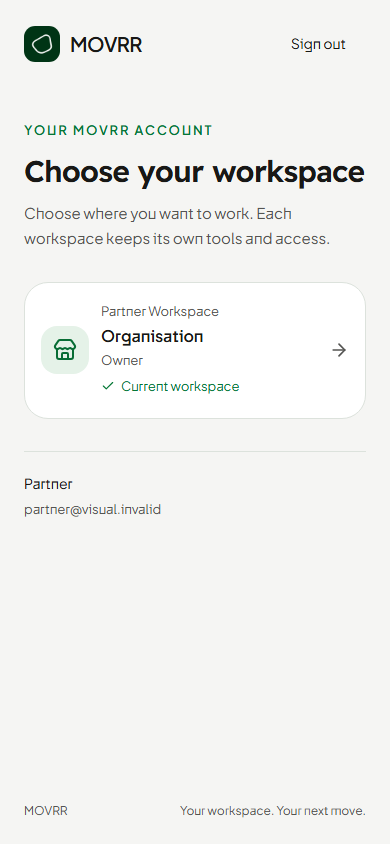
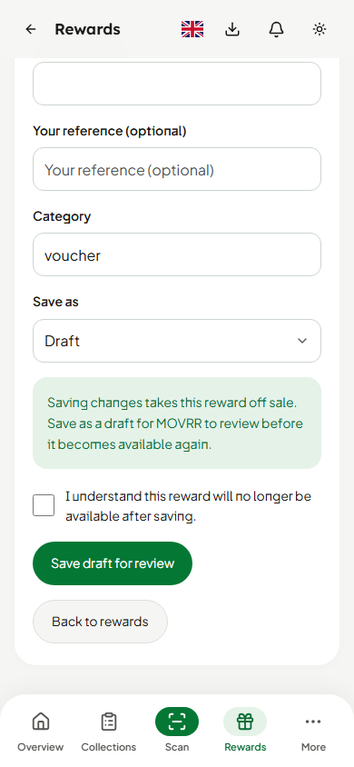
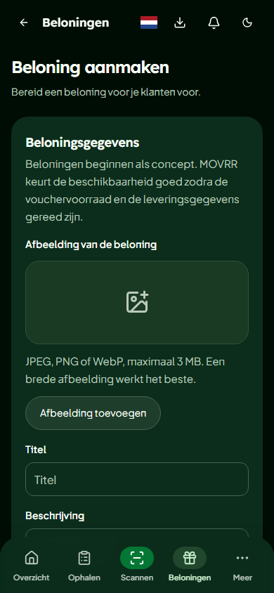
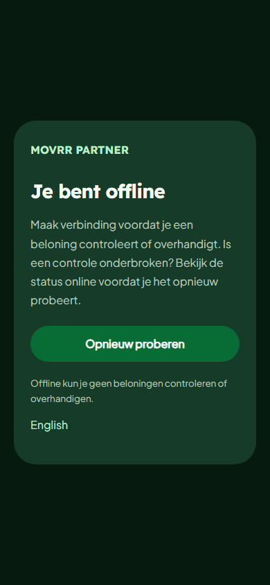
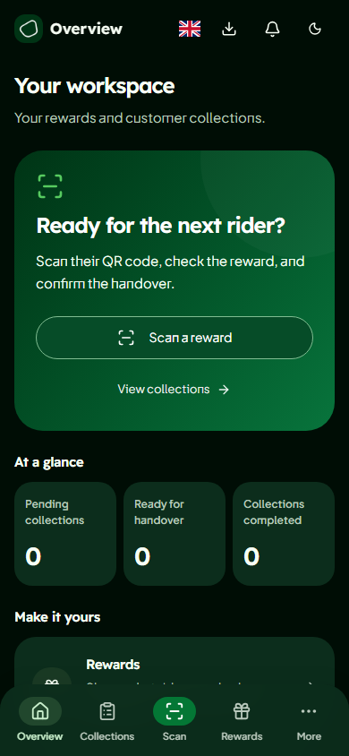
Actual production components and routes. Session, localhost database transport and media-provider boundaries are isolated. Contract-test records are labelled as such; no production merchant, inventory, identity or transaction was created. Public redemption stays Disabled. Current Rider component comparison.











